Tutorial: Resource estimation with PyGSLIB¶
This tutorial will guide you on doing resource estimation with PyGSLIB. The informing data is from the BABBITT zone of the KEWEENAWAN DULUTH COMPLEX.
The sequence of data preparation and estimation used in this example is as follows:
- import drillhole tables
- create a drillhole object
- composite drillhole intervals
- desurvey drillholes
- code drillholes with domains
- declustering and basic statistics
- create a block model
- populate a wireframe domain with blocks
- estimate with ordinary kriging
- basic model validation
To run this demo in your computer download and unpack the demo files.
Prerequisites¶
You will need pygslib and paraview to complete this excercise.
You can install pygslib with the command
conda install -c opengeostat pygslib, assuming that you use conda or miniconda.
You may also download Paraview and install. Another alternative is Mayavy, but we find the Paraview is easier to install and more powerful. Paraview can be used to process data, for example, to extract grade shell wireframes from block models in VTK format.
To follow this tutorial you may be familiar with:
- Python 2.7 or 3.6
- Python Data Analysis Library Pandas. PyGSLIB was designed to work with Pandas.
- Matplotlib
- Paraview, an open-source, multi-platform data analysis and visualization application.
- GSLIB, geostatistics and mineral resource estimation.
Loading python packages¶
>>> # import third party python libraries
>>> import pandas as pd
>>> import matplotlib.pylab as plt
>>> import numpy as np
>>> # make plots inline in Ipython Notebooks/QT terminal
>>> # %matplotlib inline
>>> # import pygslib
>>> import pygslib
Need some help? Just type print (pygslib.__doc__) or go to the PyGSLIB online manual
You may want having a look at pygslib wikies, if you are interested in some technical and implementation details.
Finally look into the code, it is free and clean, sometimes…
Loading the drillhole tables¶
PyGSLIB only understands drillholes tables loaded into Pandas.DataFrames.
Two tables are compulsory:
- the collar, with the compulsory fields
['BHID', 'XCOLLAR', 'YCOLLAR', 'ZCOLLAR']and the optional field'LENGTH' - and survey, with the compulsory fields
['BHID', 'AT', 'AZ', 'DIP']
In addition, you may have any number of optional interval tables with
the compulsory fields ['BHID', 'FROM', 'TO']
>>> # importing data from file
>>> collar = pd.read_csv('collar_BABBITT.csv')
>>> survey = pd.read_csv('survey_BABBITT.csv')
>>> assay = pd.read_csv('assay_BABBITT.csv')
collar, survey and assay are loaded as Pandas.DataFrames objects
>>> print (type(collar))
<class 'pandas.core.frame.DataFrame'>
You can see the columns types and plot the tables as follow:
>>> print (collar.dtypes)
BHID object
XCOLLAR float64
YCOLLAR float64
ZCOLLAR float64
dtype: object
>>> print (collar.head(3))
BHID XCOLLAR YCOLLAR ZCOLLAR
0 34873 2296021.09 414095.85 1590.0
1 B1-001 2294148.20 420495.90 1620.9
2 B1-002 2296769.50 422333.50 1553.0
>>> print (survey.head(3))
BHID AT AZ DIP
0 34873 0.0 0 90.0
1 B1-001 0.0 327 60.0
2 B1-002 0.0 327 60.0
>>> print (assay.head(3))
BHID FROM TO CU NI S FE
0 34873 0.0 2515.0 NaN NaN NaN NaN
1 34873 2515.0 2517.4 0.03 0.08 NaN NaN
2 34873 2517.4 2518.9 0.04 0.10 NaN NaN
Pandas provides a large set of functions to modify your data. Lets remove some columns and make non-assayed intervals equal to zero.
>>> # droping some columns
>>> assay.drop(['NI','S','FE'], axis=1, inplace=True)
>>> # making non-sampled intervals equal to zero
>>> assay.loc[~np.isfinite(assay['CU']), 'CU']=0
Creating drillhole object¶
To get access to the drillhole functions implemented in PyGSLIB, such as
desurvey and compositing, you need to create a drillhole object (an
instance of the class Drillhole, defined on the submodule
gslib.drillhole)
>>> #creating a drillhole object
>>> mydholedb=pygslib.drillhole.Drillhole(collar=collar, survey=survey)
>>> # now you can add as many interval tables as you want, for example, assays, lithology and RQD.
>>> mydholedb.addtable(assay, 'assay', overwrite = False)
UserWarning: ! Collar table without LENGTH field
The output above is a warning message. This one is a complain because
the field LENGTH was not included in the collar table. You will see
similar warnings any time PyGSLIB detects a potential issue in your
data.
>>> # validating a drillhole object
>>> mydholedb.validate()
UserWarning: ! survey with one value at BHID: 34873. This will produce error at desurvey
UserWarning: ! survey with one value at BHID: B1-001. This will produce error at desurvey
The warning above is serious. There are drillholes with only one survey record and to desurvey we need at least two records, the first one may be at the collar of the drillhole.
>>> # fixing the issue of single interval at survey table
>>> mydholedb.fix_survey_one_interval_err(90000.)
Note: To validate interval tables you may use the function
validate_table.
>>> # validating interval tables
>>> mydholedb.validate_table('assay')
Compositing¶
Before doing any statistical or geostatistical analysis you may verify that all samples have approximately the same length. If samples have different lengths you may “resample” the drillhole intervals using a compositing algorithm.
>>> # Calculating length of sample intervals
>>> mydholedb.table['assay']['Length']= mydholedb.table['assay']['TO']- mydholedb.table['assay']['FROM']
>>> # printing length mode
>>> print ('The Length Mode is:', mydholedb.table['assay']['Length'].mode()[0])
The Length Mode is: 10.0

Most samples (the mode) are 10 ft length. This value or any of its multiples are good options of composite length, they minimize the over-splitting of sample intervals.
>>> # compositing
>>> mydholedb.downh_composite('assay',
variable_name= "CU",
new_table_name= "CMP",
cint = 10,
minlen=-1,
overwrite = True)
>>> # first 5 rows of a table
>>> print (mydholedb.table["CMP"].tail(5))
BHID CU FROM TO _acum _len
54184 RMC-66313 0.0 970.0 980.0 0.0 10.0
54185 RMC-66313 0.0 980.0 990.0 0.0 10.0
54186 RMC-66313 0.0 990.0 1000.0 0.0 10.0
54187 RMC-66313 0.0 1000.0 1010.0 0.0 10.0
54188 RMC-66313 0.0 1010.0 1020.0 0.0 7.0
Note that some especial fields were created, those fields have prefix
_. _acum is the grade accumulated in the composite interval (sum
of grades from sample intervals contributing to the composite interval)
and _len is the actual length of the composite.
In the table CMP the interval at row 54188 has FROM : 1010.0 and TO: 1020.0 but the sample length is only 7.0 ft. In this way the FROM
and TO intervals of any drillhole or table are always at the same
position and you can safely use the fields ['BHID', 'FROM'] to merge
tables.
Desurveying¶
To plot drillholes in 3D or to estimate grade values you need to
calculate the coordinates of the composites. This process is known as
desurvey. There are many techniques to desurvey, PyGSLIB uses minimum curvature and balanced tangential.
Desurvey will add the fields azm, dipm and xm, ym, zm, these are
directions and the coordinates at the mid point of composite intervals.
You have the option to add endpoint coordinates xb, yb, zb and
xe, ye, ze, these are required to export drillholes to Paraview (in
vtk format).
>>> # desurveying an interval table
>>> mydholedb.desurvey('CMP',warns=False, endpoints=True)
>>> # first 3 rows of a table
>>> print (mydholedb.table["CMP"].head(3))
BHID CU FROM TO _acum _len azm dipm xm ym
0 34873 0.0 0.0 10.0 0.0 10.0 0.0 90.0 2296021.0 414095.84375
1 34873 0.0 10.0 20.0 0.0 10.0 0.0 90.0 2296021.0 414095.84375
2 34873 0.0 20.0 30.0 0.0 10.0 0.0 90.0 2296021.0 414095.84375
zm xb yb zb xe ye ze
0 1585.0 2296021.0 414095.84375 1590.0 2296021.0 414095.84375 1580.0
1 1575.0 2296021.0 414095.84375 1580.0 2296021.0 414095.84375 1570.0
2 1565.0 2296021.0 414095.84375 1570.0 2296021.0 414095.84375 1560.0
Creating a BHID of type integer¶
The GSLIB FORTRAN code can not handle data of type str,
sometimes you need to transform the BHID to type int, for example,
to use the condition maximum number of samples per drillholes in kriging.
The function txt2intID will do this work for you.
>>> # creating BHID of type integer
>>> mydholedb.txt2intID('CMP')
>>> # first 3 rows of a subtable
>>> print (mydholedb.table["CMP"][['BHID', 'BHIDint', 'FROM', 'TO']].tail(3))
BHID BHIDint FROM TO
54186 RMC-66313 399 990.0 1000.0
54187 RMC-66313 399 1000.0 1010.0
54188 RMC-66313 399 1010.0 1020.0
Rendering drillhole intervals in Paraview and exporting drillhole data¶
PyGSLIB can export drillhole intervals to VTK. Drag and drop the VTK
file on Paraview to see the drillholes in 3D. For a better image quality
add a tube filter and update the color scale.
>>> # exporting results to VTK
>>> mydholedb.export_core_vtk_line('CMP', 'cmp.vtk', title = '')
This is how it looks in Paraview

Interval tables are stored as a python dictionary of {'Table Name' : Pandas.Dataframes}. To export data to *.csv format use the Pandas
function Dataframe.to_csv. You can also export to any other format
supported by Pandas, this is the list of formats
supported.
>>> # inspecting interval tables in drillhole object
>>> print ("Table names ", mydholedb.table_mames)
... print ("Tables names", mydholedb.table.keys())
... print ("Table is ", type(mydholedb.table))
Table names ['assay', 'CMP']
Tables names ['assay', 'CMP']
Table is <type 'dict'>
>>> # exporting to csv
>>> mydholedb.table["CMP"].to_csv('cmp.csv', index=False)
Tagging samples with domain code¶
Use the function pygslib.vtktools.pointinsolid to label
composites in a domain defined by a closed wireframe. You can
also use this function to label samples in open surfaces (ej. between two
surfaces), below a surface and above a surface.
>>> # importing the wireframe
>>> domain=pygslib.vtktools.loadSTL('domain.stl')
Only Stereo Lithography (*.STL) and XML VTK Polydata (*.VTP) file formats are implemented. If your data is in a different format, ej. DXF, you can use a file format converter, my favorite is meshconv
>>> # creating array to tag samples in domain1
>>> inside1=pygslib.vtktools.pointinsolid(domain,
... x=mydholedb.table['CMP']['xm'].values,
... y=mydholedb.table['CMP']['ym'].values,
... z=mydholedb.table['CMP']['zm'].values)
>>>
>>> # creating a new domain field
>>> mydholedb.table['CMP']['Domain']=inside1.astype(int)
>>> # first 3 rows of a subtable
>>> print (mydholedb.table['CMP'][['BHID', 'FROM', 'TO', 'Domain']].head(3))
BHID FROM TO Domain
0 34873 0.0 10.0 0
1 34873 10.0 20.0 0
2 34873 20.0 30.0 0
>>> # exporting results to VTK
>>> mydholedb.export_core_vtk_line('CMP', 'cmp.vtk', title = 'Generated with PyGSLIB')
>>> # exporting to csv
>>> mydholedb.table["CMP"].to_csv('cmp.csv', index=False)
A section of the wireframe and the drillholes may look as follows

Block modeling¶
Cu grades will be estimated on blocks inside the mineralized domain. To create those blocks you may:
- create a block model object
pygslib.blockmodel.Blockmodel - fill the mineralized domain with blocks
In PyGSLIB we use percent blocks. Our plan is implementing subcell style using Adaptive Mesh Refinement (AMR).
Blocks are stored in the class member bmtable, this is a Pandas
DataFrame with especial field index IJK or [IX,IY,IZ] and
coordinates [XC, YC, ZC]. We use GSLIB order, in other words,
IJK is the equivalent of the row number in a GSLIB grid.
Block model tables can be full or partial (with some missing blocks). Only one table will be available in a block model object.
The block model definition is stored in the members
nx, ny, nz, xorg, yorg, zorg, dx, dy, dz. The origin
xorg, yorg, zorg refers to the lower left corner of the lower left
block (not the centroid), like in Datamine Studio.
>>> # The model definition
>>> xorg = 2288230
>>> yorg = 415200
>>> zorg = -1000
>>> dx = 100
>>> dy = 100
>>> dz = 30
>>> nx = 160
>>> ny = 100
>>> nz = 90
>>> # Creating an empty block model
>>> mymodel=pygslib.blockmodel.Blockmodel(nx,ny,nz,xorg,yorg,zorg,dx,dy,dz)
>>> # filling wireframe with blocks
>>> mymodel.fillwireframe(domain)
>>> # the fillwireframe function generates a field named __in,
>>> # this is the proportion inside the wireframe. Here we rename __in to D1
>>> mymodel.bmtable.rename(columns={'__in': 'D1'},inplace=True)
>>> # creating a partial model by filtering out blocks with zero proportion inside the solid
>>> mymodel.set_blocks(mymodel.bmtable[mymodel.bmtable['D1']> 0])
>>> # export partial model to a VTK unstructured grid (*.vtu)
>>> mymodel.blocks2vtkUnstructuredGrid(path='model.vtu')
Note that fillwireframe created or overwrited mymodel.bmtable.
The blocks outside the wireframe where filtered out and the final output
is a partial model with block inside or touching the wireframe domain.
Note that fillwireframe works with closed surfaces only.
A section view of the blocks colored by percentage inside the solid and the wireframe (white lines) may look as follows:
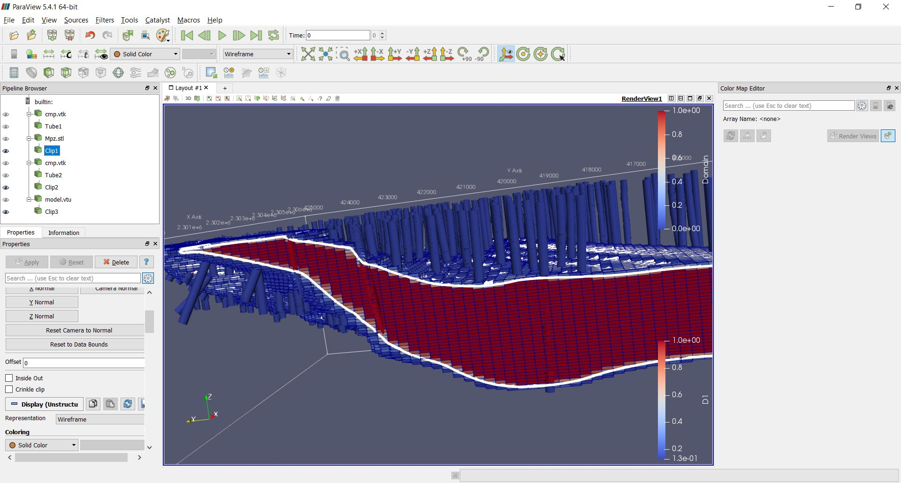
Some basic stats¶
You may spend some time doing exploratory data analysis, looking at statistical plots, 3D views and 2D sections of your data. A good comersial software for this is Supervisor, open source options are Pandas, Statsmodels, Seaborn and glueviz.
PyGSLIB includes some minimum functionality for statistical plots and calculations, with support for declustering wight. Here we demonstrate how you can do a declustering analysis of the samples in the mineralized domain and how to evaluate the declustered mean. The declustered mean will be compared later with the mean of CU estimates.
Note: In this section we are not including all the statistical analysis usually required for resource estimation.
>>> #declustering parameters
>>> parameters_declus = {
... 'x' : mydholedb.table["CMP"].loc[mydholedb.table['CMP']['Domain']==1, 'xm'],
... 'y' : mydholedb.table["CMP"].loc[mydholedb.table['CMP']['Domain']==1, 'ym'],
... 'z' : mydholedb.table["CMP"].loc[mydholedb.table['CMP']['Domain']==1, 'zm'],
... 'vr' : mydholedb.table["CMP"].loc[mydholedb.table['CMP']['Domain']==1, 'CU'],
... 'anisy' : 1.,
... 'anisz' : 0.05,
... 'minmax' : 0,
... 'ncell' : 100,
... 'cmin' : 100.,
... 'cmax' : 5000.,
... 'noff' : 8,
... 'maxcel' : -1}
>>> # declustering
>>> wtopt,vrop,wtmin,wtmax,error, \
... xinc,yinc,zinc,rxcs,rycs,rzcs,rvrcr = pygslib.gslib.declus(parameters_declus)
>>> #Plotting declustering optimization results
>>> plt.plot (rxcs, rvrcr, '-o')
>>> plt.xlabel('X cell size')
>>> plt.ylabel('declustered mean')
>>> plt.show()
>>> plt.plot (rycs, rvrcr, '-o')
>>> plt.xlabel('Y cell size')
>>> plt.ylabel('declustered mean')
>>> plt.show()
>>> plt.plot (rzcs, rvrcr, '-o')
>>> plt.xlabel('Z cell size')
>>> plt.ylabel('declustered mean')
>>> plt.show()
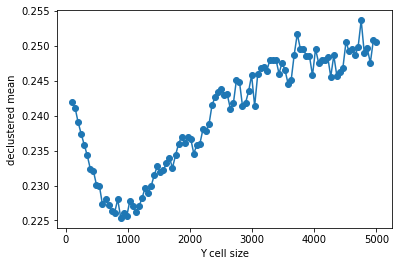 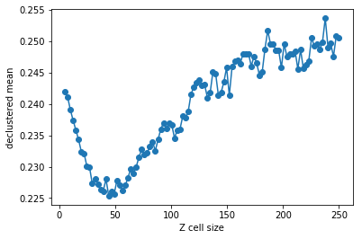
>>> # parameters for declustering with the cell size selected
>>> parameters_declus = {
... 'x' : mydholedb.table["CMP"].loc[mydholedb.table['CMP']['Domain']==1, 'xm'],
... 'y' : mydholedb.table["CMP"].loc[mydholedb.table['CMP']['Domain']==1, 'ym'],
... 'z' : mydholedb.table["CMP"].loc[mydholedb.table['CMP']['Domain']==1, 'zm'],
... 'vr' : mydholedb.table["CMP"].loc[mydholedb.table['CMP']['Domain']==1, 'CU'],
... 'anisy' : 1., # y == x
... 'anisz' : 0.1, # z = x/20
... 'minmax' : 0,
... 'ncell' : 1,
... 'cmin' : 1000.,
... 'cmax' : 1000.,
... 'noff' : 8,
... 'maxcel' : -1}
>>>
>>>
>>> # declustering
>>> wtopt,vrop,wtmin,wtmax,error, \
... xinc,yinc,zinc,rxcs,rycs,rzcs,rvrcr = pygslib.gslib.declus(parameters_declus)
>>>
>>> # Adding declustering weight to a drillhole interval table
>>> mydholedb.table["CMP"]['declustwt'] = 1
>>> mydholedb.table["CMP"].loc[mydholedb.table['CMP']['Domain']==1, 'declustwt'] = wtopt
>>> # calculating declustered mean
>>> decl_mean = rvrcr[0]
Now we can calculate some declustered stats and plot declustered histogras
# prepare parameters dictionary
>>> parameters = {
'hmin' : None, #in/output rank-0 array(float,'d')
'hmax' : None, #in/output rank-0 array(float,'d')
'ncl' : 30, #int, number of bins
'iwt' : 1, #int, 1 use declustering weight
'ilog' : 1, #int, 1 use logscale
'icum' : 0, #int, 1 use cumulative
'va' : mydholedb.table["CMP"].loc[mydholedb.table['CMP']['Domain']==1, 'CU'], # array('d') with bounds (nd)
'wt' : mydholedb.table["CMP"].loc[mydholedb.table['CMP']['Domain']==1, 'declustwt'], # array('d') with bounds (nd), wight variable (obtained with declust?)
'figure' : None , # a bokeh figure object (Optional: new figure created if None). Set none or undefined if creating a new figure.
'title' : 'Hist Cu', # string. Figure title
'xlabel' : 'Cu (%)', # string. X axis label
'ylabel' : 'f(%)', # string. Y axis label
# visual parameter for the histogram
'color' : 'red', # string with valid CSS colour (https://www.w3schools.com/colors/colors_names.asp), or an RGB(A) hex value, or tuple of integers (r,g,b), or tuple of (r,g,b,a)
'legend': 'Non - Declustered', # string (Optional, default "NA")
'alpha' : 0.5, # float [0-1]. Transparency of the fill colour
'lwidth': 1, # float. Line width
# legend
'legendloc': 'top_left'}
>>>
>>> # calculate histogram
>>> stats, fig = pygslib.plothtml.histgplt(parameters)
>>> print ('CV', stats['xcvr'])
>>> print ('Mean', stats['xmen'])
>>> print ('Min', stats['xmin'])
>>> print ('Max', stats['xmax'])
# show the figure
pygslib.plothtml.show(fig)
('CV', 1.4711890014945388)
('Mean', 0.2251903672467922)
('Min', 0.0)
('Max', 15.4000001)
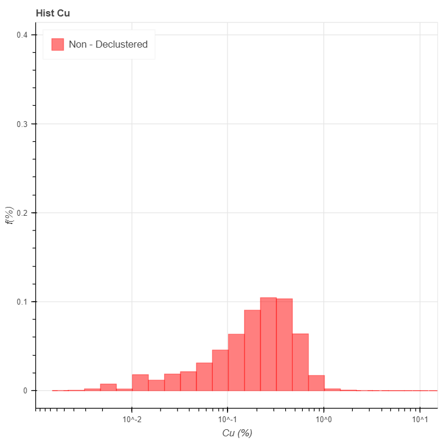
# plot CDF
>>> parameters_probplt = {
# gslib parameters for histogram calculation
'iwt' : 1, # input boolean (Optional: set True). Use weight variable?
'va' : mydholedb.table["CMP"].loc[(mydholedb.table['CMP']['Domain']==1) & (mydholedb.table['CMP']['CU']>0), 'CU'], # array('d') with bounds (nd)
'wt' : mydholedb.table["CMP"].loc[(mydholedb.table['CMP']['Domain']==1) & (mydholedb.table['CMP']['CU']>0), 'declustwt'], # array('d') with bounds (nd), wight variable (obtained with declust?)
# visual parameters for figure (if a new figure is created)
'figure' : None, # a bokeh figure object (Optional: new figure created if None). Set none or undefined if creating a new figure.
'title' : 'Prob blot', # string (Optional, "Histogram"). Figure title
'xlabel' : 'Cu', # string (Optional, default "Z"). X axis label
'ylabel' : 'P[Cu<c]', # string (Optional, default "f(%)"). Y axis label
'xlog' : 1, # boolean (Optional, default True). If true plot X axis in log sale.
'ylog' : 1, # boolean (Optional, default True). If true plot Y axis in log sale.
# visual parameter for the probplt
'style' : 'cross', # string with valid bokeh chart type
'color' : 'blue', # string with valid CSS colour (https://www.w3schools.com/colors/colors_names.asp), or an RGB(A) hex value, or tuple of integers (r,g,b), or tuple of (r,g,b,a) (Optional, default "navy")
'legend': 'Declustered Cu', # string (Optional, default "NA").
'alpha' : 1, # float [0-1] (Optional, default 0.5). Transparency of the fill colour
'lwidth': 0, # float (Optional, default 1). Line width
# leyend
'legendloc': 'bottom_right'} # float (Optional, default 'top_right'). Any of top_left, top_center, top_right, center_right, bottom_right, bottom_center, bottom_left, center_left or center
>>>
>>> results, fig2 = pygslib.plothtml.probplt(parameters_probplt)
>>> # show the plot
>>> pygslib.plothtml.show(fig2)
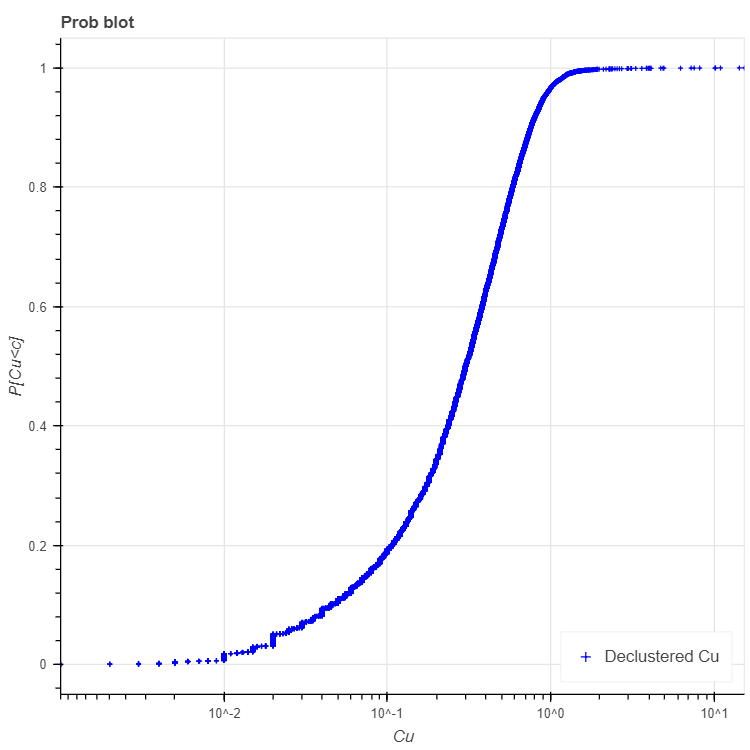
>>> print (results)
{'binval': array([1.35875964e-05, 4.50984100e-05, 2.94870422e-04, ...,
9.99926438e-01, 9.99954949e-01, 9.99984753e-01]),
'cl': array([9.99999980e-04, 9.99999980e-04, 1.00000001e-03, ...,
1.09999997e+01, 1.43499999e+01, 1.54000001e+01]),
'error': 0,
'xcvr': 0.9587717427220468,
'xlqt': 0.1400000005,
'xmax': 15.4000001,
'xmed': 0.30100000042190583,
'xmen': 0.30100000042190583,
'xmin': 0.0009999999799999999,
'xpt025': 0.014999999650000002,
'xpt975': 1.0732820446853633,
'xuqt': 0.525000006,
'xvar': 0.12672198696392797}
Variography¶
>>> # TODO
Estimating Cu grade in one block¶
For estimation you may use the function pygslib.gslib.kt3d, which is
the GSLIB’s KT3D program modified and embedded into python. KT3D now
includes a maximum number of samples per drillhole in the search
ellipsoid and the estimation is only in the blocks provided as arrays.
The input parameters of pygslib.gslib.kt3d are defined in a large
and complicated dictionary. You can get this dictionary by typing
>>> print (pygslib.gslib.kt3d.__doc__)
Note that some parameters are optional. PyGSLIB will initialize those parameters to zero or to array of zeros, for example if you exclude the coordinate Z, PyGSLIB will create an array of zeros in its place.
To understand GSLIB’s KT3D parameters you may read the GSLIB user manual or the kt3d gslib program parameter documentation.
Note that in PyGSLIB the parameters nx, ny and nz are only used by superblock search algorithm, if these parameters are arbitrary the output will be correct but the running time may be longer.
>>> # creating parameter dictionary for estimation in one block
>>> kt3d_Parameters = {
# Input Data (Only using intervals in the mineralized domain)
# ----------
'x' : mydholedb.table["CMP"]['xm'][mydholedb.table["CMP"]['Domain']==1].values,
'y' : mydholedb.table["CMP"]['ym'][mydholedb.table["CMP"]['Domain']==1].values,
'z' : mydholedb.table["CMP"]['zm'][mydholedb.table["CMP"]['Domain']==1].values,
'vr' : mydholedb.table["CMP"]['CU'][mydholedb.table["CMP"]['Domain']==1].values,
'bhidint' : mydholedb.table["CMP"]['BHIDint'][mydholedb.table["CMP"]['Domain']==1].values, # an interger BHID
# Output (Target)
# ----------
'nx' : nx,
'ny' : ny,
'nz' : nz,
'xmn' : xorg,
'ymn' : yorg,
'zmn' : zorg,
'xsiz' : dx,
'ysiz' : dy,
'zsiz' : dz,
'nxdis' : 5,
'nydis' : 5,
'nzdis' : 3,
'outx' : mymodel.bmtable['XC'][mymodel.bmtable['IJK']==1149229].values, # filter to estimate only on block with IJK 1149229
'outy' : mymodel.bmtable['YC'][mymodel.bmtable['IJK']==1149229].values,
'outz' : mymodel.bmtable['ZC'][mymodel.bmtable['IJK']==1149229].values,
# Search parameters
# ----------
'radius' : 850,
'radius1' : 850,
'radius2' : 250,
'sang1' : -28,
'sang2' : 34,
'sang3' : 7,
'ndmax' : 12,
'ndmin' : 4,
'noct' : 0,
'nbhid' : 3,
# Kriging parameters and options
# ----------
'ktype' : 1, # 1 Ordinary kriging
'idbg' : 1, # 0 no debug
# Variogram parameters
# ----------
'c0' : 0.35 * 0.109758094158, # we require not normalized variance for GCOS, fix... multiply for actual variance
'it' : [2,2],
'cc' : [0.41*0.109758094158,0.23*0.109758094158],
'aa' : [96,1117],
'aa1' : [96,1117],
'aa2' : [96,300],
'ang1' : [-28,-28],
'ang2' : [ 34, 34],
'ang3' : [ 7, 7]}
The variogram was calculated and modelled in a differnt software
The variogram types are as explained in http://www.gslib.com/gslib_help/vmtype.html, for example, 'it' : [2,2] means two exponential models, in other words [Exponential 1,Exponential 2]
Only the block with index IJK equal to 1149229 was used this time and 'idbg' was set to one in order to get a full output of the last (and unique) block estimate, including the samples selected, kriging weight and the search ellipsoid.
>>> # estimating in one block
>>> estimate, debug, summary = pygslib.gslib.kt3d(kt3d_Parameters)
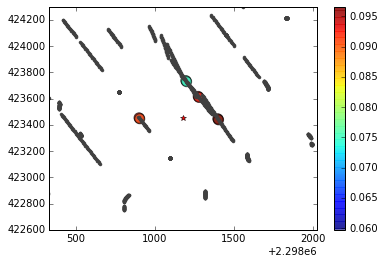
>>> # saving debug to a csv file using Pandas
>>> pd.DataFrame({'x':debug['dbgxdat'],
'y':debug['dbgydat'],
'z':debug['dbgzdat'],
'wt':debug['dbgwt']}).to_csv('dbg_data.csv', index=False)
>>>
>>> # save the search ellipse to a VTK file
>>> pygslib.vtktools.SavePolydata(debug['ellipsoid'], 'search_ellipsoid')
The results may look like this in Paraview.
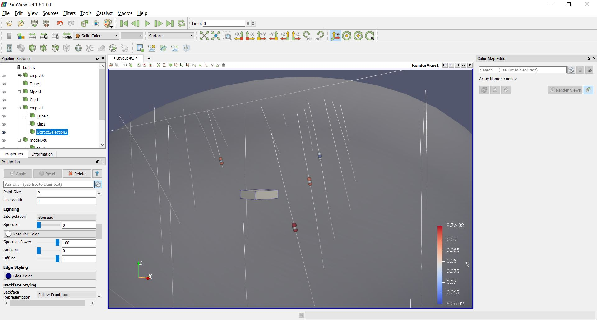
Estimating in all blocks¶
After testing the estimation parameters in few blocks you may be ready to estimate in all the blocks within the mineralized domain. Just update the parameter file to remove the debug option and reassign the target coordinates as the actual blocks coordinate arrays.
>>> # update parameter file
>>> kt3d_Parameters['idbg'] = 0 # set the debug of
>>> kt3d_Parameters['outx'] = mymodel.bmtable['XC'].values # use all the blocks
>>> kt3d_Parameters['outy'] = mymodel.bmtable['YC'].values
>>> kt3d_Parameters['outz'] = mymodel.bmtable['ZC'].values
>>> # estimating in all blocks
>>> estimate, debug, summary = pygslib.gslib.kt3d(kt3d_Parameters)
>>> # adding the estimate into the model
>>> mymodel.bmtable['CU_OK'] = estimate['outest']
>>> mymodel.bmtable['CU_ID2'] = estimate['outidpower']
>>> mymodel.bmtable['CU_NN'] = estimate['outnn']
>>> mymodel.bmtable['CU_Lagrange'] = estimate['outlagrange']
>>> mymodel.bmtable['CU_KVar']= estimate['outkvar']
>>> # exporting block model to VTK (unstructured grid)
>>> mymodel.blocks2vtkUnstructuredGrid(path='model.vtu')
>>> # exporting to csv using Pandas
>>> mymodel.bmtable['Domain']= 1
>>> mymodel.bmtable[mymodel.bmtable['CU_OK'].notnull()].to_csv('model.csv', index = False)
Validating the results¶
There are few validations you may do:
- visual validation
- comparison of mean grade
- swath plots
- global change of support (GCOS)
Swath plots and GCOS are not implemented in PyGSLIB. For visual validations you can use Paraview, for example:

>>> print ("Mean in model OK :", mymodel.bmtable['CU_OK'].mean())
>>> print ("Mean in model ID2 :", mymodel.bmtable['CU_ID2'].mean())
>>> print ("Mean in model NN :", mymodel.bmtable['CU_NN'].mean())
>>> print ("Mean in data :", mydholedb.table["CMP"]['CU'][mydholedb.table["CMP"]['Domain']==1].mean())
>>> print ("Declustered mean:", decl_mean)
('Mean in model OK :', 0.21166003)
('Mean in model ID2 :', 0.20810474)
('Mean in model NN :', 0.20687895)
('Mean in data :', 0.24149141734342264)
('Declustered mean:', 0.2251903672467954)
Create swath plots¶
There are two ways of doing swath plots
- Slicing block model and data and comparing the declustered means of each slice
- Calculating nearest neighbour in blocks (this is equivalent to declustered values) and comparing means of nearest neighbour estimates with means of other estimation methods along row, columns and levels.
We do not have a function in pygslib to do that, but we can implement the second option with one line of pandas
>>> mymodel.bmtable.groupby('XC')[['CU_OK','CU_ID2','CU_NN']].mean().plot()

>>> mymodel.bmtable.groupby('XC')[['CU_OK','CU_ID2','CU_NN']].mean().plot()
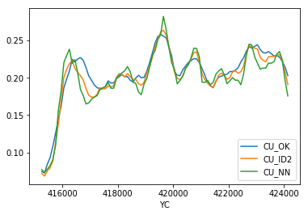
>>> mymodel.bmtable.groupby('XC')[['CU_OK','CU_ID2','CU_NN']].mean().plot()
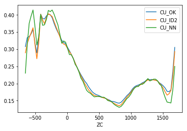
Global change of support¶
The tonnage over a cutoff \(c\) is related to the distribution \(P[Zv<=c]\) of grade values \(Z\) with block support \(v\). The tonnage (in % of the total tonnage) is equal to \(P[Zv>c] = 1-P[Zv<=c]\) and the grade \(g\) over the cutoff \(c\) is \(g=c+\sum_i(g_i*P_i)\), where \(g_i\) and \(P_i\) are the grade and probability of discretization intervals \(i\) of the distribution \(P[Zv<=c]\). This is easy to see with an image.

In this example we assume that we mine with a hand shovel (volume proportional to drillhole core) the ore (in red). Note that 20% of the samples are over the cutoff (\(P[Zp>c] = 0.2\)), then our tonnage is \(0.2 * T\) or 20% of the total tonnage.
If we decide to mine large blocks with size \(v\) then the shape of the CDF changes and we will have a different average grade and tonnage, in this case \(P[Zv>c] \approx 0.09\). This is known as support effect.

The idea behind the validation with global change of support is simple.
- calculate the distribution in point support (\(P[Zp<=c]\))
- fit it to a special mathematical model (using hermite polynomials)
- calculate the support effect (which is a ‘reduction’ in variance)
- deduce the block distribution (\(P[Zv<=c]\)) and calculate grade and tonnage (G/T) for different cutoff \(c\)
- compare this theoretical G/T curves with G/T curves calculated with the model.
Note that the global change of support is not impacted by the distance between samples, it will give non-smoothed and accurate G/T curves if the total tonnage \(T\) is correct, the variance within the block is properly calculated, and the samples are representative of the mineralization.
You may need to decluster the point distribution \(P[Zp<=c]\) if high or low grade areas are selectively over-drilled (cluster effect).
Fitting the point CDF with hermite polynomials¶
This is implemented in the module nonlinear
# Fit anamorphosis by changing, zmax, zmin, and extrapolation function
>>> PCI, H, raw, zana, gauss, z, P, raw_var, PCI_var, fig1 = pygslib.nonlinear.anamor(
z = mydholedb.table["CMP"].loc[mydholedb.table['CMP']['Domain']==1, 'CU'],
w = mydholedb.table["CMP"].loc[mydholedb.table['CMP']['Domain']==1, 'declustwt'],
zmin = mydholedb.table["CMP"].loc[mydholedb.table['CMP']['Domain']==1, 'CU'].min(),
zmax = mydholedb.table["CMP"].loc[mydholedb.table['CMP']['Domain']==1, 'CU'].max(),
zpmin = None, zpmax = None,
ymin=-5, ymax=5,
ndisc = 5000,
ltail=1, utail=4, ltpar=1, utpar=1.5, K=40)
Raw Variance 0.109758094158
Variance from PCI 0.10922679995417846
zamin 0.01520555988670437
zamax 15.39374277733923
yamin -0.26905381076215207
yamax 4.231846369273855
zpmin 0.0019999999599999998
zpmax 15.398035249048217
ypmin -0.26905381076215207
ypmax 4.281856371274255
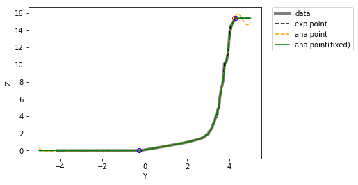
Calculate the support effect¶
This is specific to the discrete gaussian model. We need to known the PCI,
the hermite coefficients and the block variance (output of
pygslib.gslib.block_covariance and debug[‘cbb’] wen debug is set to 1
in the function estimate, debug, summary = pygslib.gslib.kt3d(kt3d_Parameters)).
>>> r = pygslib.nonlinear.get_r(Var_Zv = cbb, PCI = PCI)
('cbb :', 0.0310319369001521)
('r :', 0.6192572191827116)
Correcting the support effect on the CDF¶
Here we use the discrete gaussian model.
>>> ZV, PV, fig2 = pygslib.nonlinear.anamor_blk( PCI, H, r = r, gauss = gauss, Z = z,
ltail=1, utail=1, ltpar=1, utpar=1,
raw=raw, zana=zana)
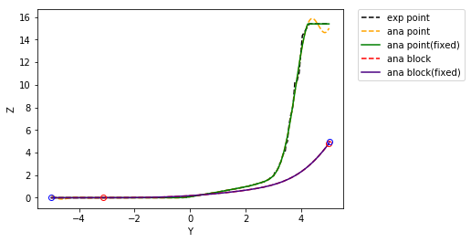
Calculate grade tonnage curves¶
We calculate G/T curves using the hermite model in block support.
cutoff = np.arange(0,0.6, 0.01)
tt = []
gg = []
label = []
# calculate GTC from gaussian in block support
t,ga,gb = pygslib.nonlinear.gtcurve (cutoff = cutoff, z=ZV, p=PV, varred = 1, ivtyp = 0, zmin = 0, zmax = None,
ltail = 1, ltpar = 1, middle = 1, mpar = 1, utail = 1, utpar = 1,maxdis = 1000)
tt.append(t)
gg.append(ga)
label.append('DGM with block support')
fig = pygslib.nonlinear.plotgt(cutoff = cutoff, t = tt, g = gg, label = label)
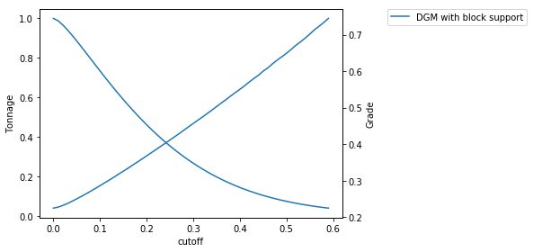
Now, we calculate the CDF from the block model, this is just one of the many ways of doing this
# to compare global resources with the one estimated we calculate the CDF of the blocks
# cdf of kriging estimate
>>> parameters_probplt = {
'iwt' : 0, #int, 1 use declustering weight
'va' : mymodel.bmtable['CU_OK'][mymodel.bmtable['CU_OK'].notnull()].values, # array('d') with bounds (nd)
'wt' : np.ones(mymodel.bmtable['CU_OK'][mymodel.bmtable['CU_OK'].notnull()].shape[0])} # array('d') with bounds (nd), wight variable (obtained with declust?)
>>>
>>> binval_ok,cl_ok,xpt025,xlqt,xmed,xuqt,xpt975,xmin,xmax, \
xcvr,xmen,xvar,error = pygslib.gslib.__plot.probplt(**parameters_probplt)
>>>
# cdf of id2
>>> parameters_probplt = {
'iwt' : 0, #int, 1 use declustering weight
'va' : mymodel.bmtable['CU_ID2'][mymodel.bmtable['CU_OK'].notnull()].values, # array('d') with bounds (nd)
'wt' : np.ones(mymodel.bmtable['CU_OK'][mymodel.bmtable['CU_OK'].notnull()].shape[0])} # array('d') with bounds (nd), wight variable (obtained with declust?)
>>> binval_id2,cl_id2,xpt025,xlqt,xmed,xuqt,xpt975,xmin,xmax, \
xcvr,xmen,xvar,error = pygslib.gslib.__plot.probplt(**parameters_probplt)
And calculate G/T curves of blocks
>>> # calculate GTC ok
>>> t,ga,gb = pygslib.nonlinear.gtcurve (cutoff = cutoff, z=cl_ok,
p=binval_ok, varred = 1, ivtyp = 2, zmin = 0, zmax = None,
ltail = 1, ltpar = 1, middle = 1, mpar = 1, utail = 1,
utpar = 1,maxdis = 1000)
>>> tt.append(t)
>>> gg.append(ga)
>>> label.append('Ordinary Kriging')
>>>
>>> # calculate GTC in block support
>>> t,ga,gb = pygslib.nonlinear.gtcurve (cutoff = cutoff, z=cl_id2,
p=binval_id2, varred = 1, ivtyp = 2, zmin = 0, zmax = None,
ltail = 1, ltpar = 1, middle = 1, mpar = 1, utail = 1,
utpar = 1,maxdis = 1000)
>>> tt.append(t)
>>> gg.append(ga)
>>> label.append('Inverse of the Distance 2)')
>>>
>>> fig = pygslib.nonlinear.plotgt(cutoff = cutoff, t = tt, g = gg, label = label)

>>> # we can plot diferences (relative error in grade)
>>> plt.plot (cutoff, gg[0]-gg[1], label = 'DGM - OK')
>>> plt.plot (cutoff, gg[0]-gg[2], label = 'DGM - ID2')
>>> plt.plot (cutoff, np.zeros(cutoff.shape[0]),'--k', label = 'Zero error')
>>> plt.title('relative error in grade')
>>> plt.legend()

# we can plot diferences (relative error in tonnage)
>>> plt.plot (cutoff, tt[0]-tt[1], label = 'DGM - OK')
>>> plt.plot (cutoff, tt[0]-tt[2], label = 'DGM - ID2')
>>> plt.plot (cutoff, np.zeros(cutoff.shape[0]),'--k', label = 'Zero error')
>>> plt.legend()
>>> plt.title('relative error in tonnage')

>>> # To get tonnes right just multiply per total tonnes
>>> # calcullate tottal tonnage (million tonnes)
>>> ttonnes = mymodel.bmtable['D1'][mymodel.bmtable['CU_OK'].notnull()].sum()*100*100*30* 0.0283168 * 2.7 /1000000
>>> # cubic foot to m -> 0.0283168, density 2.7
>>> ttt = tt[0]*ttonnes
>>> #plot
>>> plt.plot(cutoff, ttt)
>>> plt.ylabel('Mt')
>>> plt.xlabel('Cutoff')